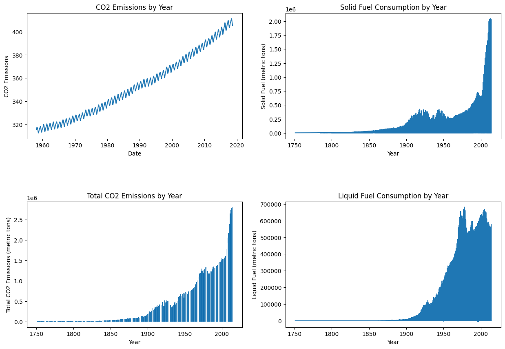
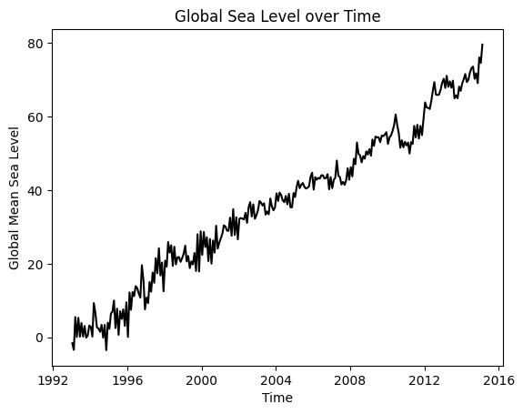

Climate change is one of the most pressing challenges facing our world today, and its impacts are felt far and wide. From rising sea levels and extreme weather events to food and water scarcity, the effects of global warming are already being felt around the globe. But what many people don’t realize is the crucial role that human activity plays in this crisis. Our consumption of fossil fuels, deforestation, and other activities are contributing to the buildup of greenhouse gases in the atmosphere, exacerbating the problem. The good news is that we have the power to make a difference. By understanding the human impact on climate change and taking steps to reduce our carbon footprint, we can help safeguard our planet for generations to come. Join us on a journey of discovery as we delve into the science behind climate change and explore how we can work together to create a more sustainable future.
In the year 2017, Yale released their statistic on the public opinion in regards to climate change, it was found that majority of Americans (58%) understand that global warming is mostly human caused. For more information on the Yale research in regards of the public opinion visit here

Graph 1: CO2 Emissions by Year (1960-2020):
This graph shows the annual carbon dioxide emissions from human activity, such as the burning of fossil fuels and deforestation, from 1960 to 2020. The data reveals that carbon emissions have increased dramatically over the last six decades, with significant spikes in the 1970s, 1990s, and 2010s. This upward trend is a clear indication of the growing impact that human activity has on the climate.
Graph 2: Solid Fuel Consumption by Year (1750-2010):
This graph shows the use of solid fuels, such as wood and coal, from 1750 to 2010. As the graph illustrates, the use of solid fuels has increased significantly since the Industrial Revolution, which began in the mid-18th century. Solid fuels are a significant source of carbon emissions, contributing to the rise in atmospheric greenhouse gases that cause climate change.
Graph 3: Total CO2 Emissions by Year (1750-2010):
This graph shows the total carbon dioxide emissions from human activity, including the burning of fossil fuels and deforestation, from 1750 to 2010. The data reveals a sharp increase in carbon emissions in the 20th century, coinciding with the rise in industrialization and modernization. The graph illustrates how human activity has significantly contributed to the buildup of greenhouse gases in the atmosphere.
Graph 4: Liquid Fuel Consumption by Year (1750-2010):
This graph shows the use of liquid fuels, such as gasoline and diesel, from 1750 to 2010. As the graph illustrates, the use of liquid fuels has increased dramatically since the early 20th century, largely due to the widespread adoption of automobiles and other forms of transportation. The burning of liquid fuels is a significant contributor to carbon emissions and thus to climate change.
The data shows a clear trend of rising carbon emissions and fuel consumption over the past few centuries, pointing to the significant impact that human activity has had on the climate. If we continue on this path, we risk catastrophic consequences for our planet and future generations.
However, we have the power to change the course of this crisis. By taking action to reduce our carbon footprint, such as switching to renewable energy sources and reducing our reliance on fossil fuels, we can help mitigate the effects of climate change. We can also support policies and initiatives that prioritize sustainability and conservation.
It’s up to us to take responsibility and take action to protect our planet. The graphs we’ve explored serve as a reminder of the critical role we play in shaping the future of our world. Let’s work together to create a more sustainable and equitable future for all, by reducing our carbon footprint, reducing our reliance on plastics, investing in sustainable alternatives, and supporting policies and initiatives that prioritize sustainability and conservation. By taking these steps, we can help mitigate the effects of climate change and create a brighter future for generations to come.
Graph: Global Plastics Production by Year (1950-2015):
The graph is an animated plotly graph that compares the global plastics production in millions of tonnes by years from 1950 to 2015. The animation shows how global plastic production has increased significantly over the past few decades, with the most significant increase happening in the last 20 years. This graph helps illustrate the significant impact that humans have had on the environment and the potential implications for climate change.
Plastic production has become a major contributor to environmental pollution, and its effects are becoming increasingly apparent. As plastic waste accumulates in our oceans and landfills, it poses a threat to wildlife and ecosystems. Plastic also contributes to climate change, both through its production and disposal.
The production of plastic requires fossil fuels, such as oil and natural gas, which are non-renewable resources that contribute to carbon emissions. Furthermore, plastic waste that is not recycled or properly disposed of can release greenhouse gases as it breaks down in landfills.
The graph I’ve created helps illustrate the scale of the plastic production problem, and highlights the need for action to reduce my plastic consumption and improve my recycling efforts. By reducing my reliance on single-use plastics and investing in sustainable alternatives, I can help mitigate the impact of plastic production on the environment and contribute to efforts to combat climate change. It’s up to me to take responsibility and take action to protect our planet. Let’s work together to create a more sustainable and equitable future for all.
Geograph: Total World Population in 2018:
The graph is a world map choropleth map that displays the total population of each country in the year 2018. The map’s gradient scale ranges from yellow to red, with red indicating countries with the highest population. Hovering over each country on the map reveals its population and country code.
As a member of the global community, I recognize that the world’s population has grown significantly over the past few centuries, with an estimated 7.9 billion people living on the planet as of 2021. This increase in population has had a significant impact on the environment and has contributed to climate change in a variety of ways.
For instance, the more people there are, the more resources are required to sustain us. This includes everything from food and water to energy and housing. Increased demand for these resources puts pressure on the environment and can lead to deforestation, water scarcity, and increased greenhouse gas emissions. Furthermore, the growing population has also led to increased waste production, which can contribute to pollution and environmental degradation.
Statistics show that population growth has a direct correlation with carbon emissions. According to the United Nations, population growth is responsible for about 37% of the increase in carbon dioxide emissions from 1990 to 2015. As such, addressing population growth is an essential part of any strategy to mitigate the effects of climate change.
The graph I’ve created helps illustrate the distribution of the world’s population and the potential impact this growth can have on the environment. By understanding the relationship between population growth and climate change, we can work towards sustainable solutions that balance human needs with the health of the planet. It’s up to me to take responsibility and take action to protect our planet. Let’s work together to create a more sustainable and equitable future for all.
Graph: Annual Global Mean Temperature by Year (1880-2016):
The graph is an animated plotly plot that shows the annual global mean temperature from 1880 to 2016. The red line on the X-axis represents zero, as the annual mean temperature was in the negatives until 1944, after which it started to rise. The animation helps to illustrate how global temperatures have increased over time.
As an individual who is concerned about the impact of climate change, this graph is particularly significant to me. The increase in global temperatures is one of the most visible and alarming effects of climate change. The data shows that the Earth’s climate has been getting warmer since the late 19th century, and this warming has accelerated in recent decades.
The graph shows that at the start of the record, in 1880, the global mean temperature was -0.2. By 2016, the global mean temperature had risen to 0.99, with a spike in 1944 of 0.2928. The trend of rising temperatures is clear and consistent, with each decade since the 1970s being warmer than the one before it.
The consequences of this warming are significant and wide-ranging, from melting ice caps and rising sea levels to more frequent and severe weather events. It’s up to each of us to take responsibility for our carbon footprint and work towards mitigating the effects of climate change. The data in this graph serves as a stark reminder of the urgency of this issue and the need for immediate action.
Global Population Growth over Time (1960-2018):
The graph is an animated plotly line graph that represents the global population growth over time, starting from 1960 to 2018. As a concerned citizen, this graph is particularly relevant to me, as the growing population has significant implications for climate change.
The graph shows that global population has grown significantly over the past few decades, increasing from around 3 billion in 1960 to over 7 billion in 2018. This growth has significant implications for the environment and has contributed to climate change in a number of ways.
As the population grows, so does the demand for resources such as food, water, and energy. Meeting this demand often requires the exploitation of natural resources, which can lead to environmental degradation and increased carbon emissions. Additionally, as the population grows, so does the amount of waste that is produced, further contributing to pollution and environmental degradation.
Statistics show that population growth has a direct correlation with carbon emissions. According to the United Nations, population growth is responsible for about 37% of the increase in carbon dioxide emissions from 1990 to 2015. As such, addressing population growth is an essential part of any strategy to mitigate the effects of climate change.
The graph I’ve created helps illustrate the significant growth in global population over the past few decades and the potential impact this growth can have on the environment. By understanding the relationship between population growth and climate change, we can work towards sustainable solutions that balance human needs with the health of the planet. It’s up to each of us to take responsibility for our carbon footprint and work towards mitigating the effects of climate change.
For more information
Global Mean Sea Level by Year (1993-2015):
The two graphs represent global mean sea level by time, starting from 1993 to 2015. The first graph is a static line graph, while the second is an animated plotly scatter plot. These graphs are important because they help illustrate the significant impact of climate change on our oceans.
The graphs show that global mean sea level has been rising over the past few decades, increasing by around 7.5 cm (or 3 inches) since 1993. This rise is primarily due to the melting of glaciers and ice sheets, which is in turn caused by rising temperatures and the resulting increase in ocean temperatures.
The consequences of rising sea levels are significant and wide-ranging. They include increased flooding and erosion, loss of habitat for marine and coastal species, and increased risk of storm surge and coastal inundation. Furthermore, the rise in sea levels also contributes to ocean acidification, which has a range of impacts on marine life and ecosystems.
The reason for having two graphs representing the same data is to provide different visualizations of the data. The static line graph helps to illustrate the overall trend in global mean sea level rise over time, while the animated plotly scatter plot can provide a more detailed and dynamic view of how the sea level has changed over time.
In summary, the graphs I’ve created help illustrate the significant impact of climate change on our oceans and the urgent need for action to mitigate its effects. By reducing our carbon footprint, investing in sustainable alternatives, and supporting policies and initiatives that prioritize sustainability and conservation, we can help protect our oceans and create a more sustainable and equitable future for all.

To read more about visit the website here.
I am Peter Bui, a student at University of Washington that researched topics on Climate Change on a global scale and how the environment has been affected by humans.